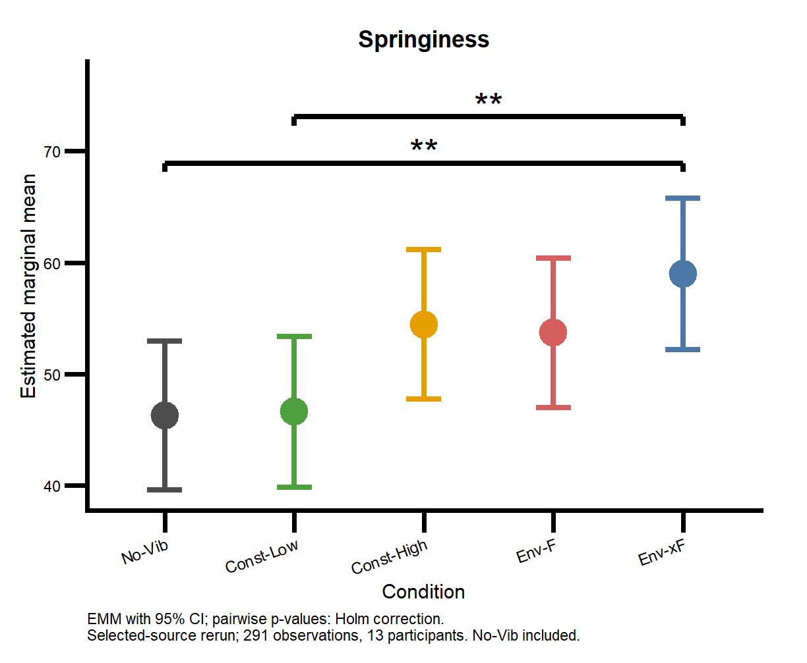

主観評価の条件間比較（LMM）
反発感・抵抗感・振動強度の評定値を線形混合効果モデル（LMM）で解析し，振動条件ごとの推定周辺平均と条件間の差を算出するスクリプト。

コードを見る：r1_subjective_lmm.R360行
# R1: selected portfolio version. Only Intensity excludes No-Vib.
# 解析条件
COND_LEVELS_ALL <- c("No-Vib", "Const-Low", "Const-High", "Env-F", "Env-xF")
COND_LEVELS_VIB <- c("Const-Low", "Const-High", "Env-F", "Env-xF")
SUBJECTIVE_METRICS <- c("Springiness", "Resistance", "Intensity")
COND_COLORS <- c(
"No-Vib" = "#4D4D4D",
"Const-Low" = "#4E9F3D",
"Const-High" = "#E69F00",
"Env-F" = "#D55E5E",
"Env-xF" = "#4C78A8"
)
# p値を有意記号に変換
sig_label <- function(p) {
case_when(
is.na(p) ~ "",
p < 0.001 ~ "***",
p < 0.01 ~ "**",
p < 0.05 ~ "*",
TRUE ~ ""
)
}
# Outcome列を先頭に移動
move_outcome_first <- function(df) {
if ("Outcome" %in% names(df)) {
df %>% select(Outcome, everything())
} else {
df
}
}
# 保存用ファイル名に整形
safe_filename <- function(x) {
x %>%
str_replace_all("[/\\\\:*?\"<>| ]+", "_") %>%
str_replace_all("__+", "_")
}
# 解析用関数
# 1指標ずつLMMを実行
run_lmm_one <- function(df, outcome, vib_only = FALSE) {
if (vib_only) {
dat <- df %>%
filter(Condition %in% COND_LEVELS_VIB) %>%
mutate(Condition = factor(as.character(Condition), levels = COND_LEVELS_VIB)) %>%
drop_na(all_of(outcome), Condition, Set, Participant)
} else {
dat <- df %>%
filter(Condition %in% COND_LEVELS_ALL) %>%
mutate(Condition = factor(as.character(Condition), levels = COND_LEVELS_ALL)) %>%
drop_na(all_of(outcome), Condition, Set, Participant)
}
fit <- lmer(
as.formula(paste0(outcome, " ~ Condition + Set + (1 | Participant)")),
data = dat,
REML = FALSE
)
anova_df <- anova(fit, type = "III", ddf = "Satterthwaite") %>%
as.data.frame() %>%
rownames_to_column("Term") %>%
as_tibble() %>%
mutate(
Outcome = outcome,
Sig = sig_label(`Pr(>F)`)
) %>%
move_outcome_first()
coef_df <- summary(fit)$coefficients %>%
as.data.frame() %>%
rownames_to_column("Term") %>%
as_tibble() %>%
mutate(
Outcome = outcome,
Sig = sig_label(`Pr(>|t|)`)
) %>%
move_outcome_first()
emm <- emmeans(fit, ~ Condition)
emm_df <- as.data.frame(emm) %>%
as_tibble() %>%
mutate(
Outcome = outcome
) %>%
move_outcome_first()
ctr_df <- contrast(emm, method = "pairwise", adjust = "holm") %>%
summary(infer = c(TRUE, TRUE)) %>%
as_tibble() %>%
mutate(
Outcome = outcome,
Sig = sig_label(p.value)
) %>%
move_outcome_first()
list(
fit = fit,
anova_df = anova_df,
coef_df = coef_df,
emm_df = emm_df,
ctr_df = ctr_df
)
}
# 有意差バーの位置を作成
make_bracket_df <- function(emm_df_one, ctr_df_one) {
cond_levels <- levels(emm_df_one$Condition)
if (is.null(cond_levels)) {
cond_levels <- unique(as.character(emm_df_one$Condition))
}
y_max <- max(emm_df_one$upper.CL, na.rm = TRUE)
y_min <- min(emm_df_one$lower.CL, na.rm = TRUE)
y_range <- y_max - y_min
if (!is.finite(y_range) || y_range <= 0) y_range <- 1
ctr_sig <- ctr_df_one %>%
filter(!is.na(p.value), p.value < 0.05) %>%
mutate(
contrast_clean = contrast %>%
str_replace_all("\\(", "") %>%
str_replace_all("\\)", "")
) %>%
separate(
contrast_clean,
into = c("group1", "group2"),
sep = " - ",
remove = FALSE
) %>%
mutate(
group1 = factor(str_trim(group1), levels = cond_levels),
group2 = factor(str_trim(group2), levels = cond_levels),
x1 = as.numeric(group1),
x2 = as.numeric(group2)
) %>%
filter(!is.na(x1), !is.na(x2)) %>%
mutate(
xmin_num = pmin(x1, x2),
xmax_num = pmax(x1, x2)
) %>%
arrange(xmin_num, xmax_num)
if (nrow(ctr_sig) == 0) return(NULL)
placed <- vector("list", nrow(ctr_sig))
occupied <- list()
overlap_1d <- function(a1, a2, b1, b2) {
!(a2 < b1 || b2 < a1)
}
for (i in seq_len(nrow(ctr_sig))) {
row <- ctr_sig[i, ]
level_i <- 1
if (length(occupied) > 0) {
repeat {
hit <- FALSE
for (j in seq_along(occupied)) {
if (occupied[[j]]$level != level_i) next
if (overlap_1d(
row$xmin_num, row$xmax_num,
occupied[[j]]$xmin_num, occupied[[j]]$xmax_num
)) {
hit <- TRUE
break
}
}
if (!hit) break
level_i <- level_i + 1
}
}
occupied[[length(occupied) + 1]] <- list(
xmin_num = row$xmin_num,
xmax_num = row$xmax_num,
level = level_i
)
placed[[i]] <- cbind(row, level = level_i)
}
bind_rows(placed) %>%
mutate(
y = y_max + (0.12 + 0.16 * (level - 1)) * y_range,
y_text = y + 0.04 * y_range,
tip = 0.03 * y_range
)
}
# EMMプロットを作成
make_emm_plot_with_brackets <- function(emm_df_one, ctr_df_one, outcome) {
cond_levels <- unique(as.character(emm_df_one$Condition))
emm_df_one <- emm_df_one %>%
mutate(Condition = factor(as.character(Condition), levels = cond_levels))
br_df <- make_bracket_df(emm_df_one, ctr_df_one)
base_y_min <- min(emm_df_one$lower.CL, na.rm = TRUE)
base_y_max <- max(emm_df_one$upper.CL, na.rm = TRUE)
base_y_rng <- base_y_max - base_y_min
if (!is.finite(base_y_rng) || base_y_rng <= 0) base_y_rng <- 1
p <- ggplot(
emm_df_one,
aes(x = Condition, y = emmean, color = Condition)
) +
geom_point(size = 6.0, stroke = 1.8) +
geom_errorbar(
aes(ymin = lower.CL, ymax = upper.CL),
width = 0.27,
linewidth = 1.65
) +
scale_x_discrete(drop = FALSE) +
scale_color_manual(values = COND_COLORS, drop = FALSE) +
theme_classic(base_size = 12) +
labs(
title = outcome,
x = "Condition",
y = "Estimated marginal mean"
) +
theme(
axis.text.x = element_text(angle = 20, hjust = 1),
plot.title = element_text(face = "bold", hjust = 0.5),
plot.margin = margin(t = 18, r = 28, b = 12, l = 12),
legend.position = "none",
axis.line = element_line(linewidth = 1.35, colour = "black"),
axis.ticks = element_line(linewidth = 1.35, colour = "black"),
axis.ticks.length = unit(4.8, "mm")
)
if (!is.null(br_df) && nrow(br_df) > 0) {
p <- p +
geom_segment(
data = br_df,
aes(x = x1, xend = x2, y = y, yend = y),
inherit.aes = FALSE,
linewidth = 1.5,
color = "black"
) +
geom_segment(
data = br_df,
aes(x = x1, xend = x1, y = y, yend = y - tip),
inherit.aes = FALSE,
linewidth = 1.5,
color = "black"
) +
geom_segment(
data = br_df,
aes(x = x2, xend = x2, y = y, yend = y - tip),
inherit.aes = FALSE,
linewidth = 1.5,
color = "black"
) +
geom_text(
data = br_df,
aes(x = (x1 + x2) / 2, y = y_text, label = Sig),
size = 8.0,
inherit.aes = FALSE,
color = "black"
) +
coord_cartesian(
ylim = c(
base_y_min,
max(br_df$y_text, na.rm = TRUE) + 0.08 * base_y_rng
),
clip = "off"
)
} else {
p <- p +
coord_cartesian(
ylim = c(base_y_min, base_y_max + 0.08 * base_y_rng),
clip = "off"
)
}
p
}
run_r1 <- function(input_csv, output_dir) {
old <- options(contrasts = c("contr.sum", "contr.poly"))
on.exit(options(old), add = TRUE)
emmeans::emm_options(lmer.df = "satterthwaite")
OUT_DIR <- output_dir
FIG_DIR <- file.path(output_dir, "figures")
dir.create(FIG_DIR, recursive = TRUE, showWarnings = FALSE)
if (!file.exists(input_csv)) stop("R1 input CSV is missing: ", input_csv)
# 主観評価CSVを読み込み
df <- read_csv(input_csv, show_col_types = FALSE) %>%
mutate(
Participant = factor(Participant),
Set = factor(Set),
Trial = suppressWarnings(as.integer(Trial)),
Condition = factor(as.character(Condition), levels = COND_LEVELS_ALL)
)
subj_exist <- SUBJECTIVE_METRICS[SUBJECTIVE_METRICS %in% names(df)]
if (length(subj_exist) == 0) stop("No subjective metrics found.")
# LMM実行
anova_list <- list()
coef_list <- list()
emm_list <- list()
ctr_list <- list()
for (met in subj_exist) {
cat("[running] ", met, "\n", sep = "")
# Intensityは振動条件内で比較
use_vib_only <- (met == "Intensity")
res <- run_lmm_one(df, met, vib_only = use_vib_only)
anova_list[[met]] <- res$anova_df
coef_list[[met]] <- res$coef_df
emm_list[[met]] <- res$emm_df
ctr_list[[met]] <- res$ctr_df
p_each <- make_emm_plot_with_brackets(
res$emm_df,
res$ctr_df,
met
) + labs(caption = paste0(
"EMM with 95% CI; pairwise p-values: Holm correction.\n",
"Selected-source rerun; ", nobs(res$fit), " observations, ",
length(unique(model.frame(res$fit)$Participant)), " participants. ",
if (use_vib_only) "No-Vib excluded." else "No-Vib included."
)) + theme(plot.caption = element_text(hjust = 0, size = 9))
save_plot_pair(
p_each,
file.path(FIG_DIR, paste0("Subjective_", safe_filename(met))),
width = 6.8,
height = 5.6
)
}
anova_all <- bind_rows(anova_list) %>% move_outcome_first()
coef_all <- bind_rows(coef_list) %>% move_outcome_first()
emm_all <- bind_rows(emm_list) %>% move_outcome_first()
ctr_all <- bind_rows(ctr_list) %>% move_outcome_first()
# 結果保存
write_excel_csv(anova_all, file.path(OUT_DIR, "LMM_subject_anova.csv"))
write_excel_csv(coef_all, file.path(OUT_DIR, "LMM_subject_coefficients.csv"))
write_excel_csv(emm_all, file.path(OUT_DIR, "LMM_subject_EMM.csv"))
write_excel_csv(ctr_all, file.path(OUT_DIR, "LMM_subject_CONTRAST_pairwise.csv"))
invisible(list(anova = anova_all, coefficients = coef_all,
emm = emm_all, contrasts = ctr_all))
}